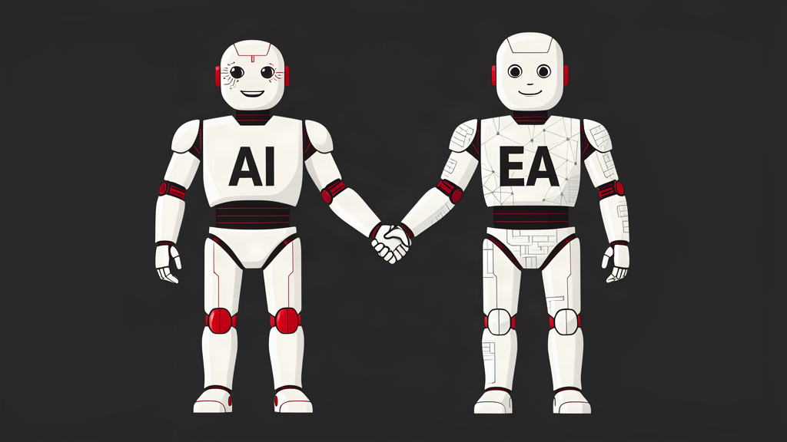

AI-EA Synergies
EA gives AI context. AI helps EA move faster.
- EA → AI: Enterprise context
- EA connects business priorities, capabilities, applications, data, technology, and ownership. This context helps teams identify valuable AI use cases, understand dependencies and constraints, and ground AI responses in the organization's architecture.
- AI → EA: Faster architecture work
- AI can help extract and structure architecture information, suggest relationships for review, and answer questions using repository data. Architects can spend less time assembling information and more time assessing change impacts, evaluating options, and advising decision-makers.
Shared foundation: Current, connected repository data and human validation.
